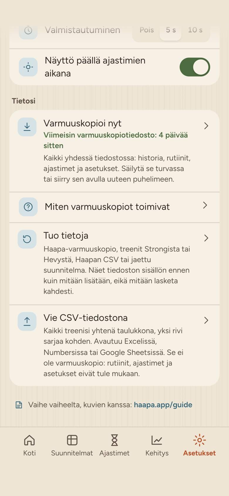
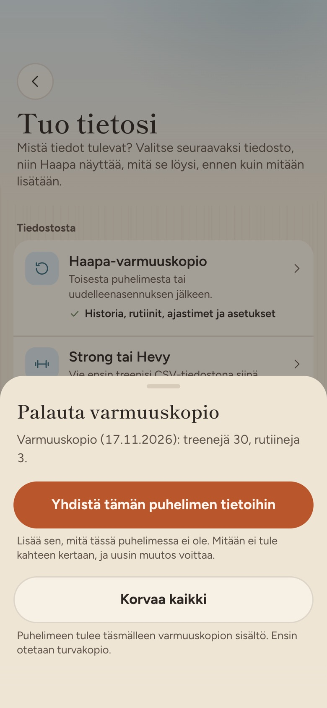
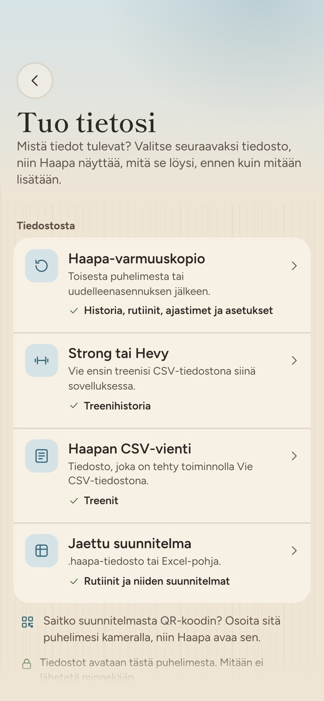
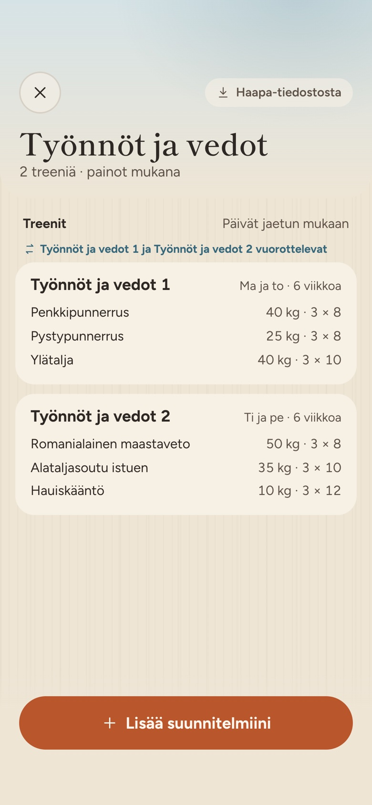

1 · Automaattisesti
Laita puhelimesi varmuuskopio päälle
Puhelimesi voi varmuuskopioida Haapan itse, muiden sovellustesi mukana. Kun saat uuden puhelimen ja otat sen käyttöön siitä varmuuskopiosta, treenisi tulevat takaisin. Tarkista kerran, että se on päällä.
- Android: avaa puhelimen Asetukset › Google › Varmuuskopiointi ja varmista, että varmuuskopiointi on päällä, myös sovellusten tiedot. Nimet voivat vaihdella hieman puhelimesta toiseen.
- iPhone: avaa Asetukset › oma nimesi › iCloud › iCloud-varmuuskopio. Jos iCloud-tilasi on liian pieni koko puhelimelle, varmuuskopioi tietokoneelle: Macilla Finderissa tai Windowsissa Apple Devices -sovelluksella.
Haapa ei näe, onko puhelimesi varmuuskopio päällä, joten se ei koskaan väitä niin. Varmuuskopioi nyt -toiminnolla tehty tiedosto (seuraava osa) on kopio, jota hallitset itse.
2 · Itse
Tee varmuuskopio itse
Varmuuskopio on yksi tiedosto, jossa on kaikki: treenisi, rutiinisi, suunnitelmasi, ajastimesi ja asetuksesi.
- Avaa Asetukset, alareunan viimeinen välilehti.
- Kohdassa Tietosi napauta Varmuuskopioi nyt.
- Puhelimesi jakovalikko aukeaa. Tallenna tiedosto paikkaan, joka ei ole vain tässä puhelimessa: iPhonella Tiedostot tai iCloud Drive, Androidilla Google Drive, tai lähetä se itsellesi sähköpostilla.
Tiedoston nimi on haapa-backup- ja päivämäärä, esimerkiksi haapa-backup-2026-11-21.json. Varmuuskopioi nyt -kohdan alla näet, milloin teit viimeksi varmuuskopion. Kerran kuussa on hyvä tapa, ja aina ennen puhelimen vaihtoa.

3 · Palautus
Palauta tai siirry uuteen puhelimeen
Varmuuskopiolla saat kaiken takaisin, tähän puhelimeen tai uuteen.
- Asenna Haapa uuteen puhelimeen ja avaa Asetukset.
- Napauta Tuo tietoja, sitten Haapa-varmuuskopio, ja valitse varmuuskopiotiedosto.
- Haapa näyttää, mitä varmuuskopiossa on. Valitse, miten tuot sen:
Yhdistä tämän puhelimen tietoihin lisää sen, mitä tässä puhelimessa ei ole. Mitään ei tule kahteen kertaan, ja uusin muutos voittaa.
Korvaa kaikki tekee puhelimesta täsmälleen varmuuskopion kaltaisen. Haapa ottaa ensin turvakopion nykyisistä tiedoista.
Etkö ole varma? Valitse Yhdistä. Se ei koskaan poista mitään. Näin voit myös yhdistää kahden puhelimen tiedot.

4 · Vienti
Vie taulukkoon
Vie koko historiasi Exceliin, Numbersiin tai Google Sheetsiin.
- Kohdassa Asetukset › Tietosi napauta Vie CSV-tiedostona.
- Tallenna tai lähetä tiedosto. Sen nimi on
haapa-workouts-ja päivämäärä. - Avaa se taulukkosovelluksessa. Jokainen sarja on oma rivinsä: päivä, liike, paino ja toistot.
CSV-tiedosto on historian lukemiseen ja lajitteluun. Jos haluat tallentaa kaiken, myös rutiinit, suunnitelmat ja ajastimet, tee varmuuskopio. Sarakkeet on kuvattu CSV-muodon sivulla (englanniksi).
5 · Tuonti
Tuo treenit Strongista, Hevystä tai Haapasta
Ota historiasi mukaan Strongista tai Hevystä tai toisessa puhelimessa tehdystä Haapan CSV-tiedostosta.
- Tuletko Strongista tai Hevystä? Vie ensin treenisi CSV-tiedostona siinä sovelluksessa.
- Avaa Haapassa Asetukset ja napauta Tuo tietoja.
- Valitse, mistä tiedosto tulee: Strong tai Hevy tai Haapan CSV-vienti. Valitse sitten tiedosto.
- Haapa näyttää, montako treeniä ja sarjaa se löysi ja mitkä liikkeiden nimet se tunnisti. Puhelimessa jo olevat treenit ohitetaan. Napauta Tuo, niin treenit lisätään.
Mitään ei lisätä ennen kuin napautat Tuo, eikä mitään lasketa koskaan kahteen kertaan, joten uusi yritys on turvallinen.

6 · Jaetut suunnitelmat
Lisää sinulle jaettu suunnitelma
Valmentaja, personal trainer tai kaveri voi lähettää sinulle koko ohjelman.
- QR-koodi: osoita sitä puhelimesi kameralla. Haapa aukeaa suunnitelman kanssa.
- Tiedosto (
.haapa) tai Excel-pohja: kohdassa Asetukset napauta Tuo tietoja, sitten Jaettu suunnitelma, ja valitse tiedosto. - Tarkista esikatselu ja napauta Lisää suunnitelmiini.
Suunnitelmasta tulee sinun. Voit muuttaa liikkeitä, painoja ja sääntöjä jälkeenpäin, eikä jakaja näe, mitä teet sillä.
